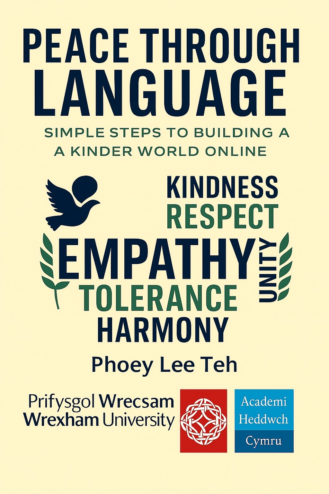

In a digital age where words travel faster than ever, language has become one of the most powerful tools we possess—capable of healing, connecting, and transforming our communities. Peace Through Language: Simple Steps to Building a Kinder World Online is a practical and hopeful guide for anyone who believes that compassion begins with communication.
This new book explores how our everyday interactions, such as, comments, messages, posts, and conversations shape the emotional climate of the online world. Through five accessible and insightful chapters, it offers readers simple, actionable strategies to cultivate empathy, reduce harm, and create spaces where people feel safe, respected, and understood.
Designed for students, educators, parents, content creators, and anyone navigating digital platforms, this book shows that peace-building does not require grand gestures. Instead, it begins with small, conscious choices: choosing kind words, understanding differences, and responding with care.
The book will be introduced online, followed by two expanded companion versions:
Peace Through Language is more than a book; it is an invitation to participate in creating a gentler digital future, one message at a time.